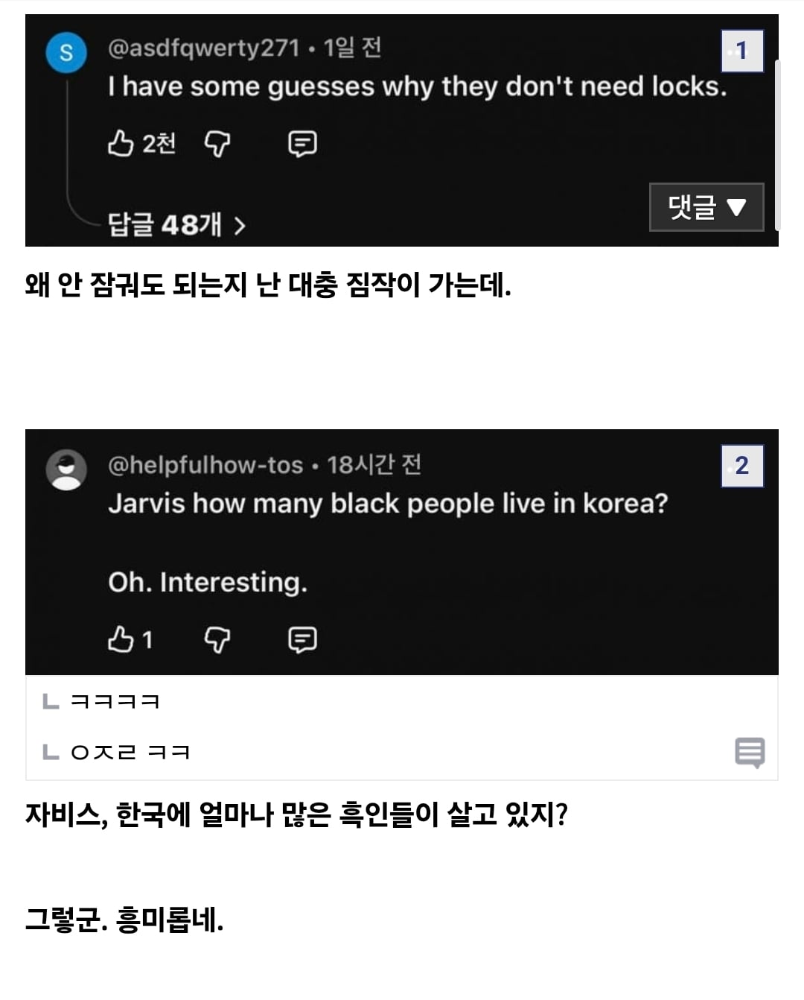

Well well well
교육수준때문인가...?
격차야 개개인따라 분명히 있긴 하겠는데 평균 교육수준으로 생각해보면 우리나라가 상위일거같은데
땅이작고 cctv 블박 넘쳐서 범죄가 금방잡힘
정확히는 공권력이 아주 쉽게 개인의 신원 및 금융거래 조회를 할 수 있음. 파출소 경찰이 클릭 몇 번으로 최근 카드 긁은 장소, 마지막 통화위치 바로 뜨니 잡기가 쉬움. 영국도 CCTV는 많은데 그 다음 단계가 연계가 안되서 쉽게 안잡힘.
영국은 울나라보다 CCTV 더 많이 깔렸는데도 범죄율 존나 높던데. 시민들이 협조를 잘 안해주나
한국같은 주민등록제가 없어서그럼
맘먹으면 다른 나라로 육로로 도망가기가 가능하니까. 우린 배타서 큰 바다로 나가지 않은 한 몰래 도망가는게 불가능하고, 바다에서 길 잘못 들면 공산국가임ㅋㅋ
영국 섬나라 아니야? 했는데 해저터널이 있었군!
씨씨티브이는 우리나라보다 더 많은 나라에서도 우리나라보다 더 많은 범죄가 일어남
개인적으로는 전국민 주민등록제도 덕분에 범죄자가 금방 잡히고 그 범죄자가 저지를
추가 범죄가 일어나지 않아서 범죄율이 낮은거 같음 ...
‘범죄와의 전쟁’
한국은 범죄율 전체가 낮은 게 아니라 특정 유형만 낮음. 살인율은 인구 10만 명당 0.6명대로 OECD 하위권이고 강도도 낮은데 사기범죄는 인구대비 세계 최상위권이고 무고나 위증도 일본의 수십배 수준이라 체감하는 치안이 좋다는건 길에서 낯선사람한테 물리적으로 뭔가 당할 확률이 낮다는 뜻이고
국가별 살인율 차이는 대부분 총기 규제하냐 안하냐에서 크게 힌번 갈리는데 한국은 일단 거기서 걸리고 폭력범죄는 15~29세 남성이 압도적으로 저지르는데 이 인구비중도 급감함ㅇㅇ 강력범죄 감소곡선하고 15~29세 (십)이대남 감소곡선하고 비슷하게 맞물림 그래서 일본도 똑같이 낮음.
거기에 할렘가같이 경찰력 동원 안되는 그런 빈곤구역도 없고 땅이 ㅈ만한데 그 뭐냐 도시 밀집도가 높아서 인구대비 경찰수가 OECD평균이하인데도 순찰하는 그 밀도가 높게 느껴지는 이유가 땅이 ㅈ만해서 그럼. 거기에다가 인종이나 종교문제도 아직 딱히 없긴하고
기본이 이렇고 거기에 감시인프라(전국민한테 성별하고 생년월일 인코딩된 일련번호 부여해서 사실상 유일한 인증수단인 휴대폰을 실명화 + 그거 없으면 은행 등 아무것도안됨)도 있고
총기규제 + 이대남 줄어듬 + 빈곤구역 딱히없음 + 땅이 ㅈ만함 + 인종/종교문제 아직은 없음을 기본으로 깔고나서 그 위에다가
중국수준의 감시인프라에 높은교육수준까지 맞물린 결과지
하나만으로 특정을 못함
무슨 민족성타령하는 애들이 있네ㅋㅋㅋㅋㅋ
불과 20-30년전만해도 범죄가 판을 치던 나라였는데
2000년대 초반만해도 전국에서 미성년자들 납치해서 사창가나 술집에 팔아넘기는거 모르는 사람이 없던게 햔국이다
이런 병신은 뭐하는 새끼인지 궁금
맞말이잖음? 90년대까진 인신매매가 뉴스에서도 자주 다루던 주제였고 00년대 초까지도 남아있었던거
성매매에서 매수자만 처벌하는 근거도 이때 영향이고
뭐야 이 좆버러지 븅신새끼는
이걸 민족성이라고 생각하는 병신 새끼가 있다고?
니가 국뽕충인건 알겠다
동의함. 민족성이 아니라 어느 시점부터 범죄가 귀찮은 일이 된 거임.
한국 문화 특성상 다섯다리 건너면 앵간한 사람 다 찾을 수 있고
땅좁아서 씨씨티비 블랙박스 피할 수 없으니
살인 강도 납치 줄고
애미뒤진 나르시시스트새끼들 교묘하게 표독하게 사람괴롭히는 그런애들이 활개를 띄지
동의함. 눈에 띄는 상처나 손해를 남기는 그런 사건은 줄어드는데, 눈에 안 띄게 심리적 타격을 남기는 상해사건(괴롭힘, 따돌림, 무시, 쓸데없는 걸 공론화 해서 스트레스 주는 에겐스러운 범죄)이 늘어남. 대상자가 죽어야 끝나는 악질범죄인데, 아직 이걸 지칭하는 용어나 공정하게 판단할 수 있는 기준이 없음...
한국의 차인이 좋은 이유는 복합적인 이유라고 생각함.
1. 소득수준의 향상
2. 주민등록번호의 존재
3. CCTV의 증가
4. 오지랖의 민족
이런것들이 복합적으로 합쳐져서 적용된거라고 생각함.
CCTV가 늘어나면서 범죄행위가 더 쉽게 잡히는데 주민번호때문에 어디 도망가서 숨어있어도 잡히는것은 시간문제임. 외국처럼 그냥 다른 주로 도망가거나 그냥 시골에서 신분세탁하고 살 수 있는 방법이 없음.
소득수준이 늘어나니 사소한 범죄로 인하여 리스크가 훨씬 더 큼
사람들이 서로 관심이 많아서 다른 사람이 이상한짓하는거 무관심하지가 않음 시선이 신경쓰이게 됨
불과 90년대까지만해도 소매치기가 드라마의 주인공으로 나오고 퍽치기니 인신매매니 있었지만 00년 이후로 진짜 남들 눈에 띄는 범죄 사소한 도둑질은 엄청나게 줄어들었음.
2000년대에는 도둑도 수없이 많았음
아파트 1층에 살면서 도둑 안들어본집이 없을꺼다.
방범창이 괜히 생긴것도 아니고
라떼 흑인만 모인 동네는 없나
몇몇 중범죄 아니고서는 21세기 대한민국에선 범죄의 리스크가 이득을 한참 넘어서 있어서...
강도, 절도는 수지가 안 맞아. 대신 사기가 많음
나라좆만함 + 전국민 신분증 국가에서관리 + 사방에카메라
어짜피 잡힌다는 생각때문에 ㅋㅋ
이거만 봐도 경범죄나 금전적이득보려는 범죄는 카메라깔고 검거만 잘해도 줄어듦
흑인들 만나보면 감정조절이 잘 안되는 경향이 있음
교육수준 탓하기엔 엘리트 집안 흑인들도 비슷함
화나면 주체를 못하고 욕구 충동조절도 잘 못함
Ntr의 인종 ㄷㄷ
마이클잭슨이 흑백 대통합을 이룬 이유도 기존의 흑인들이 가진 인식을 깨부숴서인거 같음
순수하고, 신사적이고, 이성적이고
마잭말고 저런 흑인은 본적이 없음
범죄와의전쟁, 삼청교육대때 쓸려나가고 그 다음은 CCTV보급, 좁은국토 때문임.
교육 + 감시 + 촘촘한 공권력
본문엔 뭐 흑인이 없어서 그렇다란 뉘앙스인데
그래도 되는 환경이니까 절도가 흔한 거임
흑인은 범죄다 낄낄
한국인들은 치안을 위해서 여러 자유를 희생할 가치가 있다고 생각하는 편이라 그렇지 경찰력의 접근이 쉬워도 권한이 없으면 소용 없고 민도 타령하기엔 도서지역이나 법의 사각지대에서 발생하는 범죄들이 설명이 안됨

걍 범죄자 입장에서도 절도가 별 메리트 없어서 그래
다량의 현금이나 현금화 시킬 수 있는 값비싼 물건을 집에 두지 않아서도 있을 듯
그 대신 항상 손에 쥐고 있거나, 운반하기 힘든 비싼 걸 사고
5돈 짜리 금목걸이 420만원 = 시발 그걸 왜 삼
RTX 5090 460만원 = DLSS 다 뒤졌다 ㅋㅋ
좆같은 인종차별 조크지만
시벌 도둑질로 증명하는걸 어떻게 막냐고
아마 한국도 총기 합법화 하면 볼만할끼다 하하하하
그냥 미국 놈들 업보지
왜 아프리카에서 잘살고 있는 애들 납치해서
지문
black을 감시하는 black